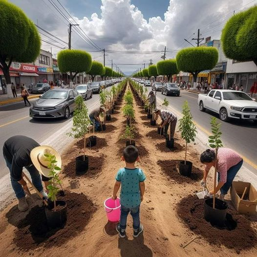

Acciones Individuales
Algunas acciones que puedes tomar incluyen reducir tu huella de carbono, utilizar transporte sostenible, conservar energía en el hogar y apoyar la economía circular.
Acciones Comunitarias
Participa en iniciativas locales como la reforestación, la agricultura sostenible y la promoción de políticas climáticas a nivel comunitario.
El cambio comienza contigo. Ahorra agua, reduce el uso de plásticos y sé consciente de tu huella de carbono.
Cuidar el medio ambiente es cuidar de nosotros mismos. Comprométete con el cambio climático.
El futuro del planeta está en nuestras manos. Actúa hoy por un mañana más verde.
Un planeta limpio comienza con ti. Haz la diferencia hoy
No hay planeta B. Cuida el único que tenemos.
Vamos a poner de moda sembrar árboles 🌳

Da click en el área donde desea plantar arboles
Recoge la basura del parque
Haz eso en la vida real y veras como cambiara nuestro planeta ¡VAMOOS!
Sabias que...
Si cuidas tu planeta, puedes contribuir a numerosos beneficios significativos tanto a nivel global como personal. Aquí tienes algunas consecuencias positivas de cuidar el medio ambiente:
- Reducción del Cambio Climático: Disminuir las emisiones de gases de efecto invernadero ayuda a mitigar el cambio climático, reduciendo la frecuencia y severidad de eventos climáticos extremos como huracanes, sequías e inundaciones.
- Mejora de la Calidad del Aire: Reducir la contaminación del aire al usar menos combustibles fósiles y optar por energías limpias puede mejorar la salud respiratoria y disminuir enfermedades como el asma y las alergias.
- Preservación de Ecosistemas y Biodiversidad: Cuidar el medio ambiente protege hábitats naturales y especies en peligro, manteniendo la biodiversidad esencial para el equilibrio de los ecosistemas.
- Conservación de Recursos Naturales: Usar los recursos de manera sostenible asegura que las futuras generaciones también puedan beneficiarse de ellos. Esto incluye agua, minerales, combustibles y alimentos.
- Mejora de la Salud Pública: Un medio ambiente más limpio reduce la incidencia de enfermedades relacionadas con la contaminación y mejora la calidad de vida general.
- Sostenibilidad Económica: La economía verde y sostenible puede generar empleos en sectores como la energía renovable, la agricultura sostenible y el reciclaje, promoviendo un desarrollo económico duradero.
- Bienestar Humano: Conservar los espacios naturales mejora el bienestar emocional y mental de las personas, proporcionando lugares para la recreación, el descanso y el contacto con la naturaleza.
- Seguridad Alimentaria: Prácticas agrícolas sostenibles aseguran una producción de alimentos estable y segura, reduciendo la vulnerabilidad a crisis alimentarias.
- Calidad del Agua: Reducir la contaminación y gestionar los recursos hídricos de manera sostenible garantiza agua potable limpia para todos.
- Responsabilidad Ética: Cuidar el planeta es una responsabilidad hacia las futuras generaciones, asegurando que puedan disfrutar de un entorno saludable y recursos suficientes para vivir.